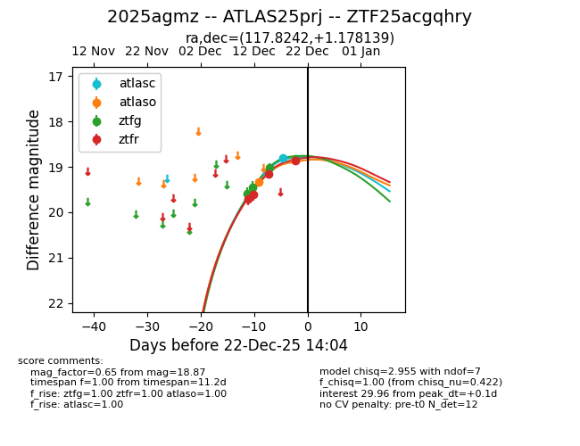
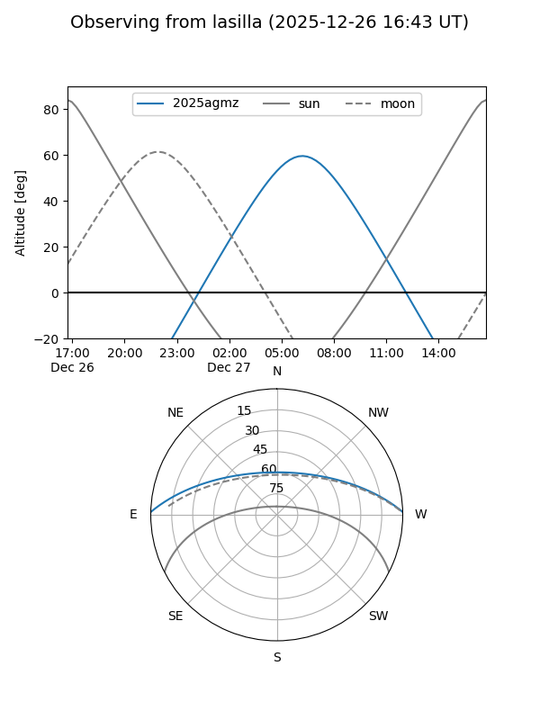
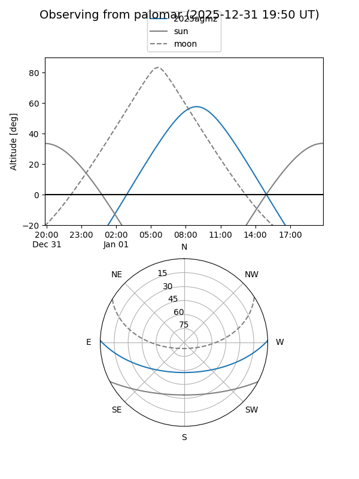
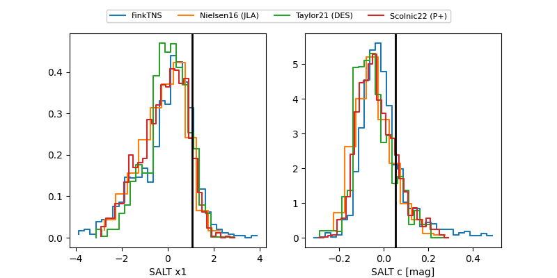

2025agmz
Target 2025agmz at 2025-12-21 00:07
Aliases and brokers:
FINK: fink-portal.org/ZTF25acgqhry
Lasair: lasair-ztf.lsst.ac.uk/objects/ZTF25acgqhry
ALeRCE: alerce.online/object/ZTF25acgqhry
TNS: wis-tns.org/object/2025agmz
YSE: ziggy.ucolick.org/yse/transient_detail/2025agmz
alt names
ZTF25acgqhry (ztf,fink_ztf)
2025agmz (tns,yse)
ATLAS25prj (atlas)
Coordinates:
equatorial (ra, dec) = 117.8242,+1.17814
equatorial (HMS+DMS) = 07:51:17.81,+01:10:41.30
galactic (l, b) = (218.8089,+13.83600)
Flags:
confirmed ia
Photometry:
last atlasc=18.80, atlaso=19.34, ztfg=18.83, ztfr=18.87
2 atlasc, 1 atlaso, 4 ztfg, 4 ztfr detections
Lightcurve

Visibility


Additional plots
